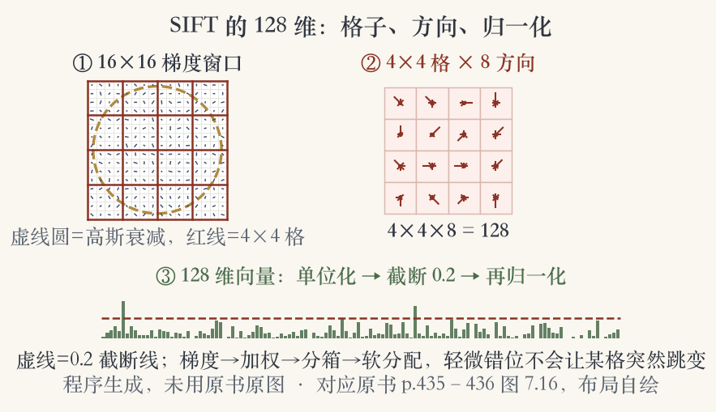
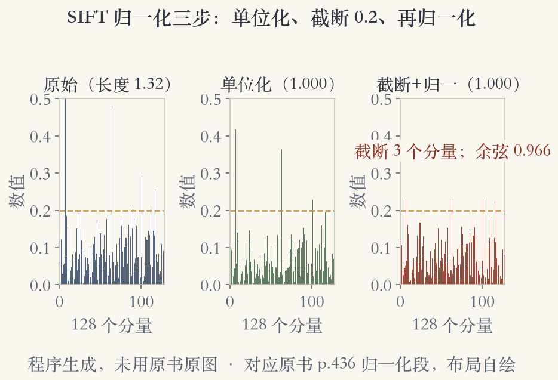
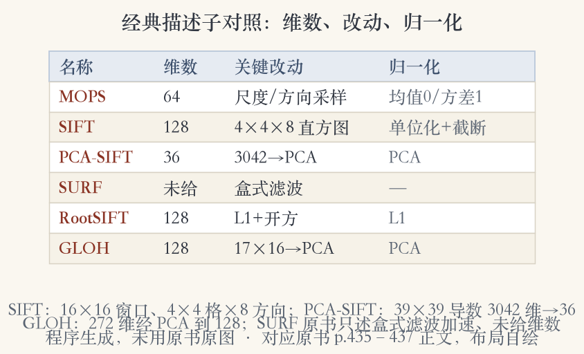

开场 · 描述子的任务
检测完，还得说清长相
- 检测找点，描述子说它长什么样。
- 平移为主时，可直接比较小块像素。
- 平方差之和或归一化互相关都可以。
- 说不清长相，匹配只能靠猜。
依据：原书第 434 页
两种做法
平移：直接比像素
有变形：先重采样再比
描述子决定跨视角能不能对上
外观变化
先摆正，再描述
- 外观随方向、尺度改变，甚至仿射形变。
- 先估计局部尺度、方向或仿射坐标架。
- 用这个坐标架重采样图块，再形成描述子。
- 图块摆正、缩放好，距离比较才有意义。
依据：原书第 434 页
权衡
太不变认不出，太敏感对不上
- 补偿之后，图块外观仍会逐图变化。
- 目标：对变化更不变，又保留可区分性。
- 太不变，不同图块都长得一样。
- Mikolajczyk 与 Schmid 综述并做了比较。
依据：原书第 434 页
两个要求
不变：同一个点对得上
可区分：不同的点分得开
两头都要照顾
多尺度定向图块
八乘八采样，间距五个像素
- 先定局部尺度和方向，再采样。
- 八乘八网格，采 64 个强度值。
- 采偏置和增益归一化后的强度。
- 间距五个像素，低频采样更抗定位误差。
依据：原书第 435 页
MOPS 的做法
8×8 采样
间距 5 像素
偏置和增益先归一
偏置与增益
均值归零，方差归一
- 简单归一化图块适合透视缩短不严重的任务。
- 五个像素间距，取更粗金字塔层防混叠。
- 线性曝光变化：减偏置、除增益。
- 重缩放后，均值零、方差一。
依据：原书第 435 页
只处理线性变化
偏置：整体变亮变暗
增益：对比度变大变小
复杂光度变化后面再管
SIFT 起点
从十六乘十六的梯度开始
- Lowe 在关键点周围取 16×16 窗口。
- 窗口里逐像素算梯度方向和幅值。
- 用关键点被检测到的那层高斯金字塔。
- 高斯衰减压低外围梯度，抗配准误差。
依据：原书第 435 页
三个选择
窗口：16×16
层级：关键点所在层
权重：中心高、外围低
四乘四乘八
四乘四格，每格八个方向
- 每个 4×4 象限做一个方向直方图。
- 每格八个方向桶，按高斯权重投票。
- 256 个幅值软分配到 2×2×2 个桶。
- 分配用三线性插值，错位不跳变。
依据：原书第 435 到 436 页；本集实验

SIFT 的 128 维流水线：16×16 梯度、4×4×8 直方图、单位化、0.2 截断、再归一化｜程序生成，未用教材或论文原图
示意图与实现
示意图画小，实际实现更密
- 图 7.16 左图：梯度方向、幅值、高斯加权。
- 右图：每个子区域统计加权方向直方图。
- 示意图用 8×8 图块、2×2 描述子阵列。
- Lowe 实现用 16×16 图块、4×4 组八桶。
依据：原书第 436 页
实现参数
图块 16×16
4×4 组直方图
每组 8 个方向桶
归一化三步
单位化、截断、再归一化
- 4×4×8 直方图给出 128 个非负值。
- 先归一化到单位长度，压对比度和增益。
- 截断到 0.2，再归一化到单位长度。
- 三步合起来，防少数大梯度独霸。
依据：原书第 436 页；本集实验

归一化三步：原始 128 维、单位长度、截断 0.2、再归一化｜程序生成，未用教材或论文原图
主成分版
三千零四十二降到三十六
- Ke 与 Sukthankar 提出主成分版 SIFT。
- 39×39 图块算梯度导数，得 3042 维。
- 主成分分析降到 36 维。
- 存储更小、匹配更快，但会丢细节。
依据：原书第 436 页
PCA-SIFT
输入：39×39 梯度导数
原始：3042 维
输出：36 维
两个变体
SURF 提速，RootSIFT 改归一化
- SURF 用盒式滤波近似导数和积分。
- RootSIFT 先按 L1 范数归一化。
- 再对每个分量开平方。
- 可区分性显著提升。
依据：原书第 436 页
改哪里
SURF：换算子
RootSIFT：换归一化
结构基本不动
GLOH
换成同心圆加扇区
- 对数极坐标分箱，替代四个象限。
- 半径 0 到 6、6 到 11、11 到 15，共 17 个空间箱。
- 每箱 16 个方向，SIFT 只用 8 个。
- 272 维直方图经主成分投影到 128 维。
依据：原书第 437 页
分箱结构
半径分三段
中心外加八个角向箱
近处细、远处粗
评测
GLOH 略胜 SIFT
- 图 7.17 每箱用十六个梯度方向。
- 图上只画八个，避免拥挤。
- 评测里 GLOH 总体最好，比 SIFT 略胜。
- 换个数据集，排名可能变。
依据：原书第 437 页
怎么读排名
更强但更复杂
SIFT 紧随其后
工程常选 SIFT
可操控滤波器
先算基，再按方向调配
- 高斯导数滤波器可以组合。
- 任意方向的奇、偶边缘和角点都能快速算。
- 高斯较宽，对定位和方向误差不敏感。
- 和第 3 章的可操控滤波是同一套思想。
依据：原书第 437 页
性能对比
没有全能冠军
- GLOH 最好，SIFT 紧随其后。
- 书里没展开的描述子也有结果。
- 维数、归一化、不变性、速度要取舍。
- 先问任务最怕什么，再选指标。
依据：原书第 435 到 437 页；本集实验

经典描述子对照：MOPS、SIFT、PCA-SIFT、SURF、RootSIFT、GLOH 的维数、改动与归一化｜程序生成，未用教材或论文原图
小结与移交
描述子有了，接下来匹配
- 本节从原始图块讲到多种描述子。
- SIFT 核心：16×16、4×4×8、128 维。
- 再加单位化、0.2 截断、再归一化。
- 下一集：阈值、比率测试、互检、几何校验。
依据：原书第 434 到 437 页